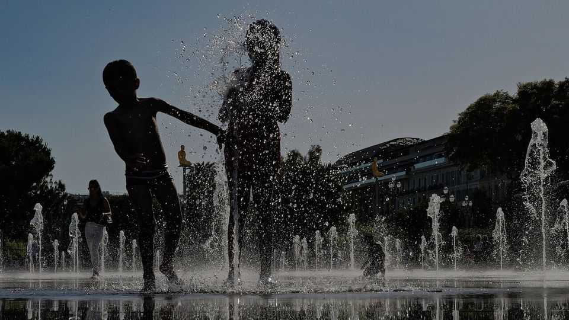
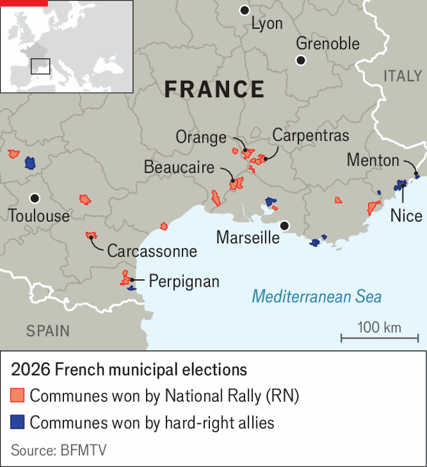

France’s south is testing out hard-right rule
The National Rally is mixing raw nativism with promises of fiscal liberalism
June 25th 2026

The BEACHfront in Nice is a spot for admiring the self as much as the sea. Biceps are big; dogs are tiny. Superyachts float in the bay. In short, not an obvious place to stir up populist indignation. Yet in March France’s fifth-biggest city was captured by a party allied to Marine Le Pen’s National Rally (RN), making it her biggest prize yet. Nice hints at how the nationalist right is conquering the south of France—and how it hopes, at the presidential election next April, to win the country.
At this year’s local elections most big cities were won or held by the left or greens. Some in the south narrowly resisted the RN, including Marseille and Toulon. Nice was a crucial victory for the nationalist right because of both its size and location. The RN and its friends now run mid-sized town halls in a wide band of southern France that includes Beaucaire, Carpentras and Orange in Provence, Menton on the Riviera, and Carcassonne and Perpignan in the south-west.

Eric Ciotti, the new mayor of Nice, who quit the centre-right Republicans to found his own party and hooked it up to the RN, promised to tighten security, cut waste and turn the page. The outgoing centrist mayor, Christian Estrosi, had held office for 17 years. Mr Ciotti’s tough law-and-order promises resonated. Away from the seafront cocktail bars, flanked by the airport and the motorway, lie the sprawling housing estates of the Moulins quarter. In May two bystanders were shot dead there by a man wielding an assault rifle. In the past two years drug-gang rivalry has led to 11 deaths. Mr Ciotti has opened a police outpost near the site of the shooting. He vows to increase by 50% the number of local police in the city by 2027.
Yet the capture of Nice reveals something else: a potent new RN electoral strategy, embraced by Jordan Bardella, the party leader, which marries its traditional working-class base with a liberal-minded bourgeois electorate. This works in Nice and other southern towns with a history of leaning to the right, as well as a high share of pensioners, who tilt right too. Mr Ciotti cut the cordon sanitaire that previously made the RN untouchable. But he studiously balanced these links with the recruitment of moderate local notables. “We are the real party of the right,” he insists.
It is a liberal fiscal message—“France wins the world cup for taxes,” he complains—with a populist twist. Mr Ciotti admits to admiring Argentina’s Javier Milei and his chainsaw, and has begun a showy assault on town-hall profligacy. In Nice families who display extravagant wealth coexist with others on squeezed budgets. Mr Ciotti has blended hardline anti-immigrant nativism with a clampdown on the town-hall car fleet and banquet budget.
The politics play out differently across the south, where the RN has a long history. In the 1980s Jean-Marie Le Pen, Ms Le Pen’s father and the party’s co-founder, began to score in double digits in the region, drawing on xenophobia prompted in part by an influx of immigrant labour recruited from north Africa. In greater Nice 17% of the population are immigrants, compared to 12% in France as a whole.
Identity politics is a common theme. Beaucaire is a Provençal town of shuttered façades dominated by a medieval fortress and a cement factory. Under RN rule for 12 years, the town hall flies only the French tricolore (not the European Union’s flag), and has revived folk traditions with an unapologetic Christian nod. Last year the town was fined €120,000 ($136,000) for refusing to dismantle a nativity scene, illegal in public buildings under France’s secular rules. This month Beaucaire organised a “weekend of tradition”, including a Provençal dance show, with free entry for all.
Residents seem to appreciate hyper-localism: potted flowers, cleaner pavements, children’s summer activities. “Beaucaire has been transformed,” says a seller of tapenade at the weekday market. “It’s clean, there are no drug dealers, there are events for everyone.” Julien Sanchez, until recently its mayor, is now the RN’s campaign director. A study of RN governance by Fred Paxton and Timothy Peace, at the University of Glasgow, calls this approach “populist pragmatism”, part of a national strategy of mainstreaming the party.
RN city governance has brought plenty of controversy. Several new RN mayors, including in Carcassonne, have stopped flying the EU flag. Many have cut subsidies to human-rights and immigrant-aid groups. Carcassonne has introduced a rule against begging. In Carpentras a song associated with the Nazi-collaborationist Vichy regime was broadcast through municipal loudspeakers on May 8th; its RN mayor denied responsibility.
Nor are the RN and friends unstoppable in the south. Marseille was held by the left after the hard left stood down in the run-off against Ms Le Pen’s candidate; it showed the value of left-wing unity, which eludes national leaders. But the region now has a concentration of hard-right laboratories, which will test how competent—and how toxic—their leaders are.■
To stay on top of the biggest European stories, sign up to Café Europa, our weekly subscriber-only newsletter.